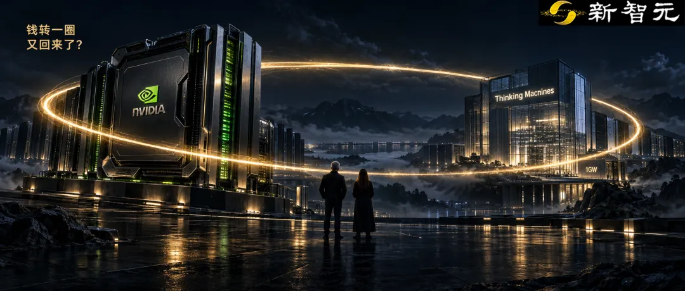
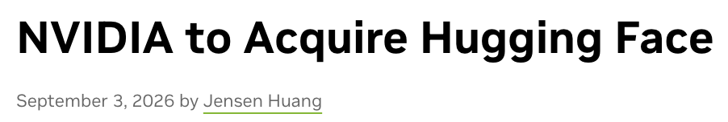

新智元报道
新智元报道

这回，老黄把AI基建的触手，伸进了模型层。
刚过去的这一周，英伟达连甩两笔王炸大单。
前脚刚与全球最大的开源模型集散地Hugging Face签下收购协议，后脚就传出消息，准备给硅谷最受瞩目的OpenAI前CTO米拉·穆拉蒂（Mira Murati）送上一张接近30亿美元的巨额支票。
老黄押注的是穆拉蒂创办的Thinking Machines Lab。
投前估值直接飙到至少400亿美元，拟募资50亿至60亿美元，而英伟达可能一家就包下约一半。
这不是英伟达初投，而是持续加码。
回看Thinking Machines Lab的成长速度，简直像开了挂。
上一轮在2025年7月，它刚拿下史上最大的种子轮之一：
20亿美元种子轮，投后估值120亿美元。
结果短短14个月过去，投前估值直接冲上400亿，翻了三倍多。
如果这次50亿到60亿美元顺利募满，投后估值更会直逼450亿至460亿美元。
更疯狂的，还在后面。
如此惊人的估值，这家公司的年化收入刚过1亿美元。
400亿的估值，对应约400倍的营收倍数。
一家成立19个月、联合创始人已经走了好几个的公司，凭什么让英伟达心甘情愿再掏出25亿到30亿美元？

从120亿到400亿，穆拉蒂只用了14个月。
2024年9月，穆拉蒂宣布从OpenAI离职。当时她是CTO，是奥特曼被董事会赶走那几天里的临时CEO。
大约5个月后，Thinking Machines Lab横空出世。
初创名单中，几乎就是一份OpenAI旧部通讯录：联合创始人里有Lilian Weng、John Schulman、Barret Zoph、Luke Metz等一众大佬。
2025年7月，20亿美元种子轮到账。
a16z领投，Accel、英伟达、AMD、Jane Street跟投。当时穆拉蒂手里连一个像样的产品都没有，投资人冲的就是她这个人。
很快，产品交出了答卷。
2025年10月，第一个产品Tinker上线，12月全面开放。
这不是一个模型，是一个微调平台：开发者把自己的数据丢进去，把开放权重模型调成自己的，按算力用量付费。
紧接着，更大的动作来了。
2026年3月10日，Thinking Machines和英伟达官宣多年战略合作：部署至少1GW的Vera Rubin系统，英伟达同时做了一笔金额未披露的重大投资。
黄仁勋（左）与穆拉蒂（右）。2026年3月10日双方官宣1GW级Vera Rubin合作，英伟达同时完成一笔金额未披露的投资。
四个月后，2026年7月15日，他们拿出了第一款自研的王牌模型Inkling：
9750亿总参数，410亿激活，最长100万token上下文，文本、图像、音频全都能进，完整权重开放。
然后就是这轮50亿至60亿美元的融资洽谈。
钱要这么多，是因为上面那份1GW的合作。
1GW是前沿实验室级别的算力。芯片、网络、电力、数据中心，全部按吉瓦级配置，每一项都是天文数字。
从最初传出的10亿美元，到如今的50亿至60亿美元，融资规模翻了五六倍，才撑得起这1GW的野心。
那这笔钱从哪里来？
上一轮，英伟达只是跟投方之一，领投的是a16z。
这一轮，领投方换成Accel，英伟达可能包揽约一半，从跟投变成最大出资方。
于是，那个熟悉的画面再次出现：英伟达既是本轮最大的出资方，也是那1GW系统的供应商。
钱进了Thinking Machines的账户，很大一部分很可能转一圈，又变成英伟达的订单。
投资、采购、收入，在同一家公司身上闭环。
方向已经足够清楚。
英伟达不再满足于给OpenAI、Anthropic这些成名实验室供芯片，它开始用股权提前绑定下一代前沿玩家。
3月那份公告里还有一句容易被忽略的话：双方要联合设计面向英伟达架构的训练和推理系统。
这意味着Thinking Machines未来的模型，从底层就是按Vera Rubin长出来的。
透过穆拉蒂这19个月的布局，你会发现她一直在避开与OpenAI、Anthropic正面比拼谁的模型更强。
甚至干脆在Inkling的发布博客里承认：
Inkling不是当前最强的模型，无论开放还是闭源。
Thinking Machines的商业模式，从Tinker上线那天起就定了，它卖的是「把模型变成你的」这件事。
企业把自己的数据、自己的业务拿来，在它的平台上训练、微调、推理，它按算力用量收钱。
用穆拉蒂自己的话说：要做人们可以塑造、可以据为己有的AI。
这句话把Thinking Machines和OpenAI、Anthropic放到了两条不同的道路上。
后两家在冲最强的通用闭源模型，它把自己放在了下面一层：不争模型第一，做帮所有人定制模型的基础设施。
这不正是老黄多次讲到的AI基建吗？
英伟达讲了两年的AI工厂、AI基建、Token经济，要的就是这种每多一个客户就多烧一份算力的生意。
3月16日GTC 2026主题演讲，黄仁勋称算力需求「涨了100万倍」，2025至2027年营收至少1万亿美元。
理解了这一点，再看英伟达为什么愿意掏钱，逻辑就通了。
这不是英伟达本月唯一的大动作。
9月3日，英伟达官宣以129.303亿美元收购Hugging Face，协议已签署。

把两笔放在一起看：
Hugging Face握着开放模型的分发入口和开发者社区；Thinking Machines握着前沿模型、微调平台和一支研究团队。
一头是入口，一头是模型。英伟达在开放权重这条线上，两头都下了注。
两笔加起来，接近160亿美元，前后只隔几天。
Inkling的完整权重就挂在Hugging Face上，还专门配了面向英伟达Blackwell的NVFP4版本。
开发者从Hugging Face下载Inkling，在Tinker上把它调成自己的，再跑在Vera Rubin上。
入口、模型、微调平台、芯片，每一步都在一个生态里。
这正是英伟达想要的：用资本提前锁定模型公司，也就锁定了它们未来的算力需求。
参考资料：
编辑：元宇